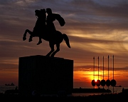
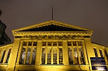
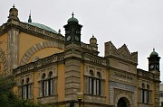

Disclaimer: These pages are not actively maintained, and some of the practical information on the site is out of date. I am working on a new version of the site that will focus more on my photos and memories of travel in Southeast Europe, and less on practical details that too easily become obsolete. In the meantime, please treat the information here with caution.
View from the city walls

Alexander the Great
Thessaloniki
Like many Balkan cities, Thessaloniki reveals its charms slowly. Its strategic position in the Southeast European transport network means that many travellers pass through here, yet few seem to stay very long. Perhaps they are put off by the absence of Classical showpieces, or an initial impression of endless traffic-clogged streets lined with bland twentieth-century architecture. But Greece's second city deserves a longer visit. Hidden away amongst the apartment blocks are treasures that bear witness to the many influences that have marked Thessaloniki (or Salonika or Solun): Classical, Byzantine, Muslim, Jewish, and modern Greek. There are churches and fortresses, wide boulevards and narrow hilly streets, lively nightlife, interesting restaurants, and some fine museums. In contrast to Athens, you can enjoy these sights without competing with busloads of tourists. All in all, Thessaloniki is one of my favourite Balkan cities.
If you would like to learn more about the city's history, I recommend Mark Mazower's Salonica: City of Ghosts - my exploration of the city was all the more enjoyable for having read this book first.
Central Thessaloniki
The physical fabric of Thessaloniki has been accident-prone even by the standards of Balkan cities. A fire in 1917 destroyed much of the historic centre; the loss was compounded by the determination of the Greek authorities to destroy the reminders of Ottoman rule, which led to the loss of the forest of minarets that had impressed earlier travellers. The grid pattern of streets that can be seen today, and many of the neo-Byzantine buildings, date from the massive urban renewal program of the 1920s. Even then the city's troubles weren't over - an earthquake in 1978 caused extensive damage to the surviving Byzantine churches.
Church of Aghia Sophia
The showpiece of the 20th century city is bustling Plateia Aristotelous, dominated by the grandiose facade of the Electra Palace Hotel. To the north is the large open space of the Roman Agora; at its corner is a low domed building, one of the few surviving Ottoman structures. It housed the Bey Hammam (Paradise Baths), and although it shows the ravages of time all too clearly, it's well worth visiting for a look at the lovely skylit ceilings. Not far away is the church of Agia Sofia, one of the largest and most impressive Byzantine churches in the city - the interior of the dome is particularly striking.
North of the dome is the vast church of Agios Dimitrios. As the shrine of Thessaloniki's protector Saint Dimitrios it has a special place in the city's heart, although the interior now feels rather too modern to be really appealing. Just uphill to the north is the more homely church of the Prophet Elijah (Ilias). From the outside it has an endearingly wonky appearance - no two edges of the structure appear to be parallel, so that it seems to be constantly on the verge of complete collapse. East from Agios Dimitrios is a small pinkish house, now the home of the Turkish consulate. This is the birthplace of the city's most influential son, one Mustafa Kemal, known to the world as Ataturk.
West of Plateia Aristotelous is the old Modiano market district, still a busy shopping area of narrow streets and pedestrian lanes. Further west again is Ladadika, where old warehouses have found new vocations as bars and restaurants. The seafront is rather disappointing, but the White Tower at its eastern end is worth a visit for the view of the city and the bay.
Bey Hammam

Central Market
The Upper Town
It's easier to imagine that something of the Ottoman city still lingers in the streets of the Upper Town (Ana Polis or Kastra). Although relatively few buildings from that era have survived even here, the narrow, hilly streets have resisted the imposition of a grid pattern. It's a pleasant place for aimless strolling; if you prefer to have a target for your wanderings, the interior of the tiny Church of Osios David is well worth a look.
At the top of Kastra is a well-preserved section of the City Walls. At the northeast corner is a viewing platform from which you can see whole city spread out like a map at your feet, and (if you're lucky with the weather) Mount Olympus across the bay. It's especially nice at sunset. A short distance to the north is the forbidding bulk of the Eptapyrgio (Yedi Küle) fortress. It was used as a jail until 1989 but is now open to visitors.
East of the centre
East of the White Tower is a rather nondescript area of exhibition centres, university buildings (covering the site of the former Jewish cemetery), and busy roads. The main reason to come here is to visit two of the city's major museums. The Archeological Museum is interesting but covers similar ground to many other Greek museums. The award-winning Museum of Byzantine Culture is more distinctively Thessalonikian (if that's actually a word). The attractively displayed exhibits in its spacious halls are an excellent introduction to the art and architecture of the Byzantine period.
Queen Olga Street (Vassilisis Olgas) runs parallel to the coast towards the suburb of Kalamaria. In the late nineteenth century this was a favoured location for wealthy Muslim and Jewish families to build their residences - in those days the avenue was closer to the sea. The families are long gone, but a few of their villas still survive. Their size and eclectic array of architectural styles reflect the confidence of their original owners: having lived in the city for centuries, both Jews and Muslims clearly had no conception of the disasters that the twentieth century had in store. Some of these buildings are in a sorry state of dereliction, but others have been spruced up for use as museums or art galleries. At the far end of the street, the enormous Villa Allatini now houses the offices of the local prefecture. There is nothing to indicate to the passer-by that it was once the domain of a Sultan of the Ottoman Empire, albeit a deposed one: Abdul Hamid II lived in exile here from 1909 to 1917.
Villa on Queen Olga Street

Yeni Djami
Near the western (city) end of Queen Olga Street, an annexe of the Archeological Museum is housed in the Yeni Djami ("New Mosque"). Built in 1902, it is somewhat remininiscent of the pseudo-Moorish National Library in Sarajevo, but in this case there is a good reason for the Andalusian references: its Ma'min congregation had its origins in Spain, and still spoke Spanish into the twentieth century. The Star of David is a recurring theme in the mosque's decoration, a reminder that the community had converted from Judaism. Despite the lack of any connection to Turkey, their fate in the population exchanges of 1923 was determined by their religion, and they were expelled along with the rest of the city's "Turks".
Once you have seen the city's own attractions, there are plenty of interesting excursions to choose from. Most of the places mentioned in the page about the Province of Macedonia can be visited from a base in Thessaloniki.
Practicalities
Much of the accommodation in Thessaloniki is aimed at business travellers rather than tourists. There are plenty of midrange hotels, but budget options are rather limited. During the autumn trade fairs it may be a good idea to reserve in advance.
Thessaloniki is quite a spread-out city, so you may wish to make use of the good network of local buses. Tickets can be bought from the machines on board - as well as single tickets they sell a useful 24-hour pass. Route #23 will save your legs from the climb up to Eptapyrgio, while route #78 is particularly useful, linking the airport to the bus station via the city centre and train station. The latter is a short distance west of the centre, while the modern KTEL bus terminal is 3km further west. Most domestic services leave from this terminal, but some buses to Athens and most international services leave from near the train station.
Thessaloniki is well placed for further exploration of the Balkans. There are two trains daily to Istanbul, three to Sofia, and two to Skopje and Belgrade. There are also buses to Istanbul, Sofia, and Tirana (but not to Skopje, as far as I know). Some international buses are operated by OSE (Greek Railways) and tickets are sold in the train station.
Read about Vergina, Edessa, Veria, and other excursions from Thessaloniki: Province of Macedonia
More photos of Thessaloniki in my Greece Galleries